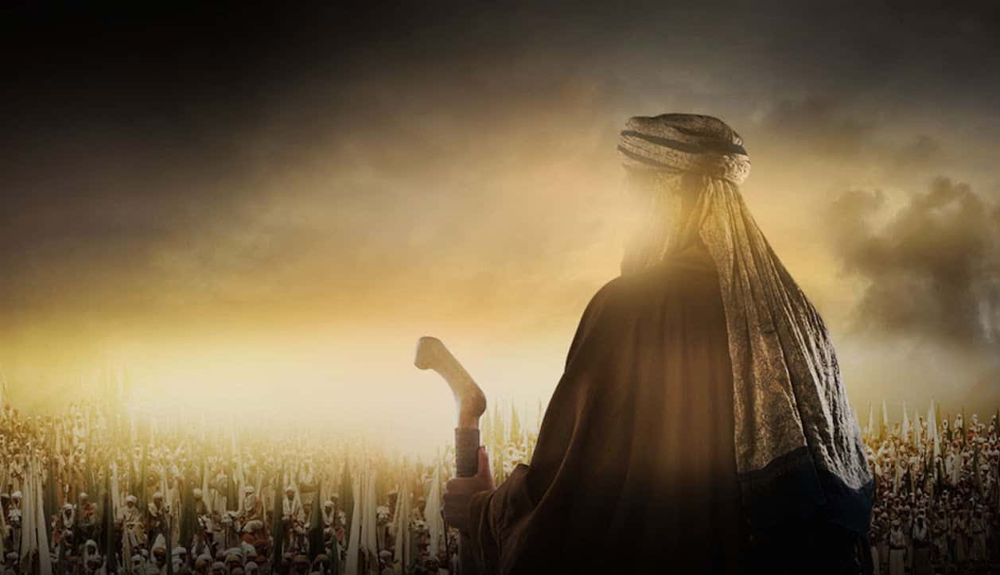

Umar bin Khattab, dikenal sebagai Umar bin al-Khattab, adalah salah satu sahabat Nabi Muhammad SAW dan khalifah kedua dalam sejarah Islam. Ia dikenal sebagai salah satu tokoh terpenting dalam sejarah Islam karena kontribusinya yang signifikan dalam pengembangan dan penyebaran agama Islam, serta pemerintahan dan administrasi di bawah kepemimpinannya. Berikut adalah kisah singkat mengenai Umar bin Khattab: ### **Kehidupan Awal** Umar bin Khattab lahir sekitar tahun 584 Masehi di Mekkah, Arab Saudi, dalam keluarga Quraisy. Ia berasal dari suku Adi dan merupakan seorang pedagang yang terhormat dan dikenal dengan kecerdasannya. Pada masa awalnya, Umar dikenal sebagai seorang yang keras dan anti-Islam, bahkan ia terlibat dalam penindasan terhadap kaum Muslimin. ### **Masuk Islam** Umar memeluk agama Islam pada tahun 616 Masehi. Kisah masuk Islamnya sangat terkenal; ia awalnya bertekad untuk menentang Islam dan membunuh Nabi Muhammad. Namun, setelah mendengar ajaran Islam secara langsung dan merenungkan kebenarannya, hatinya terbuka, dan ia menjadi salah satu pengikut Nabi Muhammad yang paling setia. Konversinya adalah salah satu momen penting dalam sejarah Islam, karena Umar dikenal dengan keberanian dan kekuatannya yang besar, yang memberikan dorongan moral dan fisik kepada kaum Muslimin. ### **Peran sebagai Sahabat Nabi** Umar bin Khattab memainkan peran penting sebagai sahabat dan penasihat Nabi Muhammad. Ia dikenal dengan kebijaksanaan dan ketegasan dalam menegakkan ajaran Islam. Selama periode Madinah, Umar banyak terlibat dalam kegiatan pemerintahan dan sosial, serta memberikan nasihat yang berharga kepada Nabi Muhammad. ### **Kepemimpinan sebagai Khalifah** Setelah wafatnya Abu Bakar ash-Shiddiq pada tahun 634 Masehi, Umar bin Khattab terpilih sebagai khalifah kedua. Masa pemerintahannya berlangsung selama sekitar 10 tahun, dari tahun 634 hingga 644 Masehi. Kepemimpinan Umar bin Khattab sangat signifikan karena beberapa alasan: 1. **Ekspansi dan Penaklukan**: - **Penaklukan Persia**: Di bawah kepemimpinannya, wilayah kekuasaan Islam meluas secara signifikan, termasuk penaklukan Kekaisaran Persia dan wilayah-wilayah di Timur Tengah. - **Penaklukan Bizantium**: Beberapa wilayah Bizantium juga jatuh ke tangan Muslim, termasuk Yerusalem. 2. **Pembangunan Infrastruktur dan Administrasi**: - Umar memperkenalkan berbagai reformasi administratif, seperti sistem perpajakan, pembagian tanah, dan administrasi pemerintahan yang lebih terstruktur. - Ia juga membangun infrastruktur penting seperti jalan, jembatan, dan sistem irigasi, serta mengorganisir institusi publik. 3. **Penyusunan Al-Qur'an**: - Salah satu pencapaian besar Umar adalah pengumpulan dan penyusunan Al-Qur'an dalam bentuk mushaf yang standar, yang membantu menjaga konsistensi teks suci Islam. 4. **Keadilan dan Kesederhanaan**: - Umar terkenal dengan kepemimpinannya yang adil dan kesederhanaan hidupnya. Ia dikenal karena kedekatannya dengan rakyatnya, seringkali berkeliling di malam hari untuk memastikan kesejahteraan mereka. - Ia menerapkan prinsip-prinsip keadilan dalam hukum Islam dan memperhatikan kebutuhan orang-orang yang kurang mampu. ### **Kematian dan Warisan** Umar bin Khattab wafat pada tahun 644 Masehi, setelah diserang oleh seorang pembunuh bernama Abu Lu'luah al-Majusi, seorang yang tidak puas dengan kebijakan-kebijakan Umar. Kematian Umar sangat dirasakan oleh umat Islam, dan ia dikenang sebagai salah satu khalifah yang paling berpengaruh dan reformis dalam sejarah Islam. Umar bin Khattab dikenang karena kontribusinya dalam memperluas wilayah kekuasaan Islam, reformasi administratif dan sosial, serta penerapan keadilan dan kesederhanaan. Kepemimpinan dan kebijaksanaannya terus dihormati dan menjadi teladan dalam sejarah Islam hingga saat ini.
